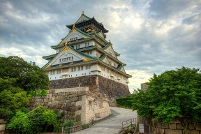
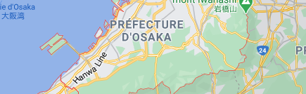

Destination
City Osaka
 Ōsaka-shi , pronounced [oːsakaɕi]; commonly just 大阪, Ōsaka [oːsaka] (listen)) is a designated city in the Kansai region of Honshu in Japan. It is the capital city of Osaka Prefecture and the largest component of the Keihanshin Metropolitan Area, the second-largest metropolitan area in Japan and among the largest urban areas in the world with more than 20 million inhabitants. Osaka was traditionally considered Japan's economic hub. By the Kofun period (300–538) it had developed into an important regional port, and in the 7th and 8th centuries, it served briefly as the imperial capital. Osaka continued to flourish during the Edo period (1603–1867) and became known as a center of Japanese culture.
